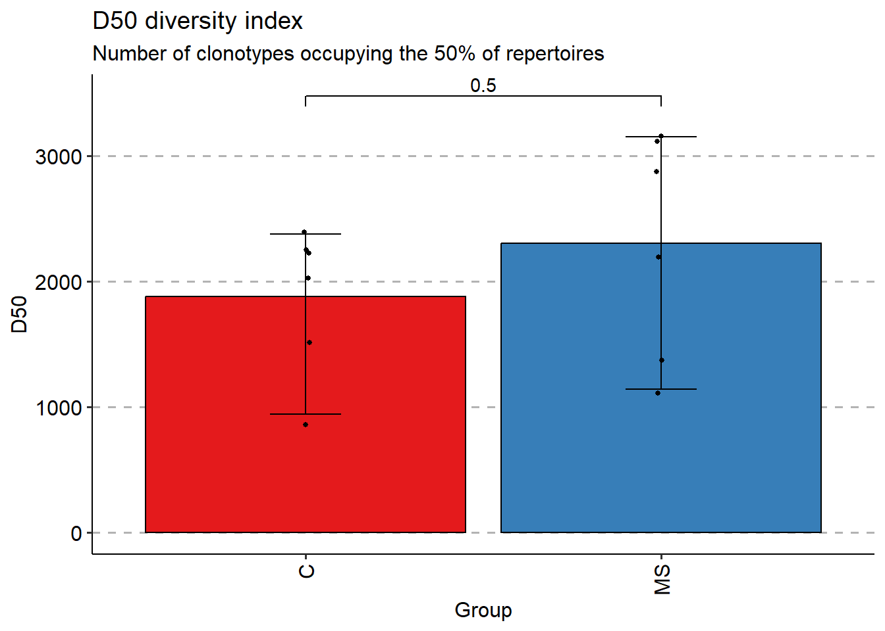
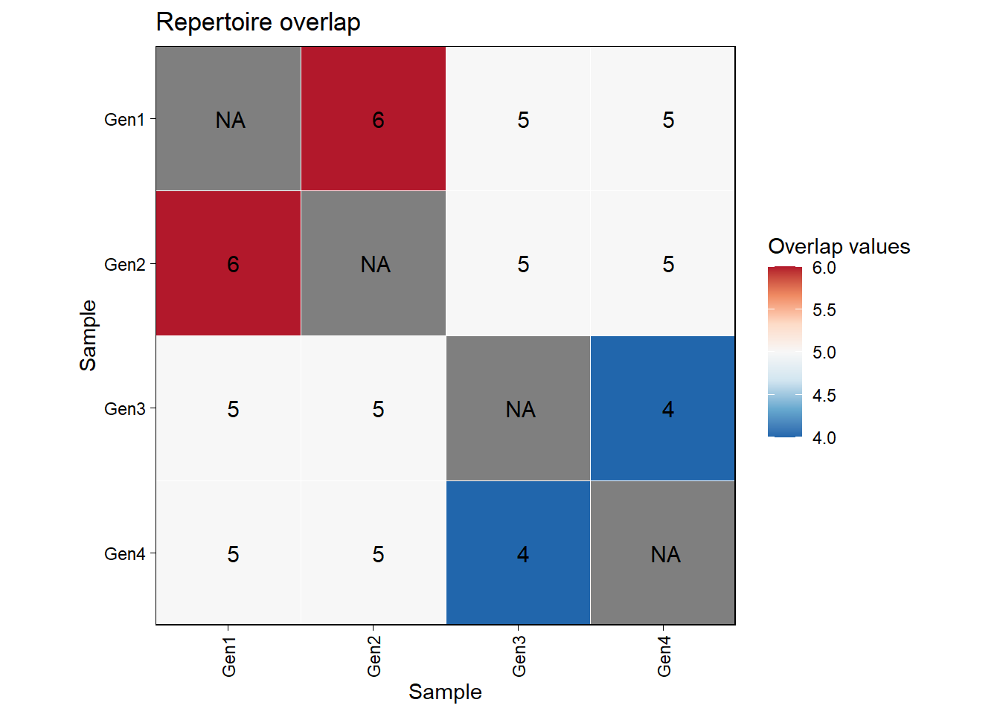

3 Vrije ruimte
Nieuwe skill
Ik ben op zoek naar een stage in de richting van medicijnontwikkeling, daarom probeer ik de skill die ik ga leren hierop aan te passen. Na onderzoek is gebleken dat er veel gebruik wordt gemaakt van machine learning voor het maken van antilichamen. Hierom wil ik in de vrije ruimte een package leren die wordt gebruikt voor antilichaamontwikkeling.
Ik ben van plan deze skill te leren door uit te zoeken welke package het meest gebruikt wordt voor antilichaamontwikkeling. De package ga ik helemaal doornemen, dit houdt in alle opties lezen en leren wat deze opties betekenen of in welke situatie welke optie nodig is. Deze package ga ik uittesten op proefdata die ik online ga zoeken. Het resultaat van deze test zal bewijzen of ik de package goed kan gebruiken. Ik probeer binnen 4 uur een package te vinden die ik ga gebruiken. Hier valt ook het downloaden van de package onder. Ik wil 8 uur spenderen aan het leren van de package, het doornemen van de verscheidene opties. 18 uur probeer ik de package uit op proefdata. Hier zal ik ook de verschillende opties binnen de package uitproberen om te kijken wat er veranderd. De laatste 2 uur wordt gebruikt om de resultaten vast te leggen en een conclusie te maken.
Ik heb packages gezocht om mee te werken. Eerst kwam ik epitopepredict tegen, maar dit bleek een Python package te zijn. Hierom koos ik voor immunarch, deze kwam ik iets later tegen. De werking is net anders, epitopepredict kan een voorspelling geven over MHC1 en MHC2 epitopen. Immunarch analyseert data en voorspelt de TCR en BCR van de imuuncellen. Aangezien immunarch wel een R package is heb ik hiervoor gekozen.
In de eerste paar code chunk wordt de ‘lightning-fast start’ uitgeprobeerd. Ook om te kijken wat voor data analyse eruit komt.
Eerst package installeren
## package 'immunarch' successfully unpacked and MD5 sums checked
##
## The downloaded binary packages are in
## C:\Users\justu\AppData\Local\Temp\RtmpEbOVrM\downloaded_packagesPackage activeren, daarnaast ook de test dataset activeren.
Vanaf hier is te zien dat alle grafieken worden gegenereerd met vis(). Deze functie kan alle data die door Immunarch wordt gebruikt herkennen en zelf daarop de grafiek aanpassen.
De functie repOverlap laat de overlap zien tussen repertoires. De imuun receptor sequenties die overeenkomen tussen repertoires. In deze grafiek is te zien dat A2-i132 en A2-i133 erg veel overlap hebben.
geneUsage() is een functie die berekent hoeveel het immunorecepetor gen wordt gebruikt. In de test data is te zien dat TRBV5-1 erg actief is.
repDiversity kan de repertoire diversiteit berekenen. Het aantal verschillende soorten of objecten, worden berekent. Hier zijn vele verschillende methoden voor, repDiversity pakt als standaard Chao1 wat het aantal soorten in de populatie voorspelt.
Om de functies beter te begrijpen zoek ik de ?help van functies op.
De dataset die gebruikt wordt bestaat uit meerdere tibbles, eerst een lijst met genen. Daarna hoe de dataset er per gen uitziet. Als laatste een dataset met de metadata (informatie over waar de data vandaan komt).
## # A tibble: 6,532 × 15
## Clones Proportion CDR3.nt CDR3.aa V.name D.name J.name V.end D.start D.end
## <dbl> <dbl> <chr> <chr> <chr> <chr> <chr> <int> <int> <int>
## 1 173 0.0204 TGCGCCAGC… CASSQE… TRBV4… TRBD1 TRBJ2… 16 18 26
## 2 163 0.0192 TGCGCCAGC… CASSYR… TRBV4… TRBD1 TRBJ2… 11 13 18
## 3 66 0.00776 TGTGCCACC… CATSTN… TRBV15 TRBD1 TRBJ2… 11 16 22
## 4 54 0.00635 TGTGCCACC… CATSIG… TRBV15 TRBD2 TRBJ2… 11 19 25
## 5 48 0.00565 TGTGCCAGC… CASSPW… TRBV27 TRBD1 TRBJ1… 11 16 23
## 6 48 0.00565 TGCGCCAGC… CASQGD… TRBV4… TRBD1 TRBJ1… 8 13 19
## 7 40 0.00471 TGCGCCAGC… CASSQD… TRBV4… TRBD1 TRBJ2… 16 21 26
## 8 31 0.00365 TGTGCCAGC… CASSEE… TRBV2 TRBD1 TRBJ1… 15 17 20
## 9 30 0.00353 TGCGCCAGC… CASSQP… TRBV4… TRBD1 TRBJ2… 14 23 28
## 10 28 0.00329 TGTGCCAGC… CASSWV… TRBV6… TRBD1 TRBJ2… 12 20 25
## # ℹ 6,522 more rows
## # ℹ 5 more variables: J.start <int>, VJ.ins <dbl>, VD.ins <dbl>, DJ.ins <dbl>,
## # Sequence <lgl>## # A tibble: 12 × 6
## Sample ID Sex Age Status Lane
## <chr> <chr> <chr> <dbl> <chr> <chr>
## 1 A2-i129 C1 M 11 C A
## 2 A2-i131 C2 M 9 C A
## 3 A2-i133 C4 M 16 C A
## 4 A2-i132 C3 F 6 C A
## 5 A4-i191 C8 F 22 C B
## 6 A4-i192 C9 F 24 C B
## 7 MS1 MS1 M 12 MS C
## 8 MS2 MS2 M 30 MS C
## 9 MS3 MS3 M 8 MS C
## 10 MS4 MS4 F 14 MS C
## 11 MS5 MS5 F 15 MS C
## 12 MS6 MS6 F 15 MS CBij veel voorbeelden die volgen wordt de vis() functie ook erachteraan geplakt. Deze functie maakt het resultaat van de code overzichtelijker. Daarnaast kan met vis() een .by optie gebruikt worden om te groeperen op metadata zoals geslacht.
repExplore wordt gebruikt om een eerste indruk te krijgen van de data. De functie kan standaard statistiek berekenen voor een repertoire. De optie .method bepaalt wat berekent wordt voor je repertoire. In het voorbeeld is “volume” gebruikt wat het aantal unieke receptor clonotypes berekent. Andere mogelijkheden zijn: “count” voor de relatieve dichtheid, “len” om sequentie lengte te berekenen. “clones” geeft het aantal clones in het repertoire.
repExplore heeft een .col optie om aan te geven of het gaat over nucleotiden (“nt”) of aminozuren (“aa”)
## Sample Volume
## A2-i129 A2-i129 6443
## A2-i131 A2-i131 6375
## A2-i133 A2-i133 6300
## A2-i132 A2-i132 6721
## A4-i191 A4-i191 5058
## A4-i192 A4-i192 5763
## MS1 MS1 5301
## MS2 MS2 7043
## MS3 MS3 6310
## MS4 MS4 7313
## MS5 MS5 5588
## MS6 MS6 7278fixVis() wordt gebruikt om grafieken publicatie klaar te maken.
Met repclonality kan de clonale proporties gemeten worden. De .method kan verschillen. In dit voorbeeld wordt “homeo” gebruikt voor de .method, deze meet de relatieve dichtheid als deel van het hele repertoire door clonale groepen. “clonal.prop” meet de clonale proportie, “top” meet de 10 grootste clonotypes en “rare” berekent de de groepen met de laagste of ‘zeldzaamste’ clonotypes. Voor “homeo” kan je .clone.types gebruiken om aan te geven wat de proportie van de dichtheid is. Zonder invoer worden de getallen gekoppeld aan de groottes in de grafiek hieronder.
repFilter() werkt als filter(), met deze functie kan je data selecteren die je wilt gebruiken of juist data weglaten. .method heeft de inputs: “by.clonotype” (wat de standaard is), “by.meta” en “by.rep”. In voorbeeld hieronder wordt het mannelijk geslacht eruit gefilterd. exclude kan worden vervangen met ‘morethan’, ‘lessthan’ en ‘interval’ om aan te geven dat je de waardes tussen 2 mogelijkheden wilt gebruiken.
filtered <- repFilter(immdata, .method = "by.meta", .query = list(Sex = exclude("M")))$meta
filtered## # A tibble: 6 × 6
## Sample ID Sex Age Status Lane
## <chr> <chr> <chr> <dbl> <chr> <chr>
## 1 A2-i132 C3 F 6 C A
## 2 A4-i191 C8 F 22 C B
## 3 A4-i192 C9 F 24 C B
## 4 MS4 MS4 F 14 MS C
## 5 MS5 MS5 F 15 MS C
## 6 MS6 MS6 F 15 MS CBij repOverlap kan de optie .col gegeven worden. Dit kan erg nuttig zijn als een gen wat voor het epitoop codeert wordt vergeleken. repOverlap gebruikt standaard de aminozuur sequenties als de optie niet wordt aangegeven, hieronder is dit aangepast naar “nt” voor nucleotiden sequenties.

De .col accepteert V gene segments, J gene segments en D gene segments als invoer. Dit is gedaan in de grafiek hieronder met de V gene segments. Je ziet dat als er specifieker wordt gekeken er andere genen meer kunnen overlappen, hier bijvoorbeeld de genen A2-i129 en A2-i132.

repOverlap kan andere methode gebruiken. Hieronder wordt de “jaccard” methode gebruikt. Deze laat het percentage wat overeenkomt zien ten opzicht van het geheel. In dit geval wordt de grafiek onduidelijk omdat de getallen erg lang zijn, wel is te zien dat met deze methode dezelfde genen overlappen aangezien dezelfde hokjes rood of roder worden. Zie figuur bij chunk repoverlap col
## | | | 0% | |= | 1% | |== | 3% | |=== | 4% | |==== | 5% | |==== | 6% | |===== | 8% | |====== | 9% | |======= | 10% | |======== | 12% | |========= | 13% | |========== | 14% | |=========== | 15% | |============ | 17% | |============= | 18% | |============= | 19% | |============== | 21% | |=============== | 22% | |================ | 23% | |================= | 24% | |================== | 26% | |=================== | 27% | |==================== | 28% | |===================== | 29% | |====================== | 31% | |====================== | 32% | |======================= | 33% | |======================== | 35% | |========================= | 36% | |========================== | 37% | |=========================== | 38% | |============================ | 40% | |============================= | 41% | |============================== | 42% | |=============================== | 44% | |=============================== | 45% | |================================ | 46% | |================================= | 47% | |================================== | 49% | |=================================== | 50% | |==================================== | 51% | |===================================== | 53% | |====================================== | 54% | |======================================= | 55% | |======================================= | 56% | |======================================== | 58% | |========================================= | 59% | |========================================== | 60% | |=========================================== | 62% | |============================================ | 63% | |============================================= | 64% | |============================================== | 65% | |=============================================== | 67% | |================================================ | 68% | |================================================ | 69% | |================================================= | 71% | |================================================== | 72% | |=================================================== | 73% | |==================================================== | 74% | |===================================================== | 76% | |====================================================== | 77% | |======================================================= | 78% | |======================================================== | 79% | |========================================================= | 81% | |========================================================= | 82% | |========================================================== | 83% | |=========================================================== | 85% | |============================================================ | 86% | |============================================================= | 87% | |============================================================== | 88% | |=============================================================== | 90% | |================================================================ | 91% | |================================================================= | 92% | |================================================================== | 94% | |================================================================== | 95% | |=================================================================== | 96% | |==================================================================== | 97% | |===================================================================== | 99% | |======================================================================| 100%
Hieronder wordt de methode “cosine” gebruikt. Deze methode meet of er veel overlap zit tussen 2 vectors die de cosinus meten van de hoek die ertussen zit. Op deze manier zijn weer andere genen erg overlappend. Al is deze methode weer niet erg overzichtelijk door getallen met veel decimalen.
## | | | 0% | |= | 1% | |== | 3% | |=== | 4% | |==== | 5% | |==== | 6% | |===== | 8% | |====== | 9% | |======= | 10% | |======== | 12% | |========= | 13% | |========== | 14% | |=========== | 15% | |============ | 17% | |============= | 18% | |============= | 19% | |============== | 21% | |=============== | 22% | |================ | 23% | |================= | 24% | |================== | 26% | |=================== | 27% | |==================== | 28% | |===================== | 29% | |====================== | 31% | |====================== | 32% | |======================= | 33% | |======================== | 35% | |========================= | 36% | |========================== | 37% | |=========================== | 38% | |============================ | 40% | |============================= | 41% | |============================== | 42% | |=============================== | 44% | |=============================== | 45% | |================================ | 46% | |================================= | 47% | |================================== | 49% | |=================================== | 50% | |==================================== | 51% | |===================================== | 53% | |====================================== | 54% | |======================================= | 55% | |======================================= | 56% | |======================================== | 58% | |========================================= | 59% | |========================================== | 60% | |=========================================== | 62% | |============================================ | 63% | |============================================= | 64% | |============================================== | 65% | |=============================================== | 67% | |================================================ | 68% | |================================================ | 69% | |================================================= | 71% | |================================================== | 72% | |=================================================== | 73% | |==================================================== | 74% | |===================================================== | 76% | |====================================================== | 77% | |======================================================= | 78% | |======================================================== | 79% | |========================================================= | 81% | |========================================================= | 82% | |========================================================== | 83% | |=========================================================== | 85% | |============================================================ | 86% | |============================================================= | 87% | |============================================================== | 88% | |=============================================================== | 90% | |================================================================ | 91% | |================================================================= | 92% | |================================================================== | 94% | |================================================================== | 95% | |=================================================================== | 96% | |==================================================================== | 97% | |===================================================================== | 99% | |======================================================================| 100%
Voor geneUsage kan je per gensoort kijken naar de usage, zolang er een ‘species’ bij gegeven wordt. als voorbeeld: gene = “HomoSapiens.TRBJ”. Hieronder wordt dit voorbeeld uitgevoerd, je ziet het gebruik van alle TRBJ gen soorten.
Om meer informatie te krijgen over de soorten genen kan gene_stats() gebruikt worden. gene_stats() laat de alias zien van de ‘species’ naast de kolom met de ‘species’. Dan zie je de kolommen met genes en het aantal dat de ‘species’ ervan hebben.
## alias species ighd ighj ighv igij igkj igkv iglj iglv traj
## 1 bt BosTaurus 21 4 25 0 1 6 5 26 46
## 2 cd CamelusDromedarius 0 0 0 0 0 0 0 0 0
## 3 clf CanisLupusFamiliaris 0 0 0 0 0 0 0 0 0
## 4 dr DanioRerio 7 7 0 3 0 0 0 0 0
## 5 hs HomoSapiens 30 13 248 0 5 64 7 69 57
## 6 macmul MacacaMulatta 24 7 19 0 4 83 5 0 0
## 7 mmc MusMusculusCastaneus 0 0 0 0 0 4 0 0 0
## 8 mmd MusMusculusDomesticus 0 0 0 0 0 2 0 0 0
## 9 musmus MusMusculus 32 8 225 0 8 109 3 5 42
## 10 oa OrnithorhynchusAnatinus 3 10 0 0 0 0 0 0 0
## 11 oc OryctolagusCuniculus 10 11 39 0 8 26 2 20 0
## 12 om OncorhynchusMykiss 9 7 6 0 0 0 0 0 0
## 13 rn RattusNorvegicus 30 4 113 0 6 132 2 8 0
## 14 smth MusMusculusMolossinus 0 0 0 0 0 1 0 0 0
## 15 smth MusMusculusMusculus 0 0 0 0 0 1 0 0 0
## 16 smth MusSpretus 0 0 0 0 0 2 0 2 0
## 17 ss SusScrofa 5 5 15 0 8 19 4 14 0
## trav trbd trbj trbv trdd trdj trdv trgj trgv
## 1 0 0 0 0 5 3 0 6 15
## 2 0 0 0 0 0 0 7 2 2
## 3 0 2 8 19 0 0 0 7 8
## 4 0 0 0 0 0 0 0 0 0
## 5 60 3 14 64 3 4 6 4 10
## 6 0 2 15 58 0 0 0 0 0
## 7 0 0 0 0 0 0 0 0 0
## 8 0 0 0 0 0 0 0 0 0
## 9 145 2 14 23 2 3 7 0 11
## 10 0 0 0 0 0 0 0 0 0
## 11 0 0 0 0 0 0 0 0 0
## 12 0 1 9 0 0 0 0 0 0
## 13 0 0 0 0 0 0 0 0 0
## 14 0 0 0 0 0 0 0 0 0
## 15 0 0 0 0 0 0 0 0 0
## 16 0 0 0 0 0 0 0 0 0
## 17 0 0 0 0 0 0 0 0 0Nu testen we een voorbeeld uit de gene_stats grafiek. We pakken de RattusNorvegicus met IGHD.
geneUsage heeft ook een .ambig optie. Dit is om ‘gene assignments’ te regelen. Deze optie staat standaard op “inc” om alle verschillende gen sequenties mee te nemen. Deze standaard optie wordt eerst getest. Daarna een grafiek waar “exc” is gebruikt. Wat je ziet komt doordat alle genen vallen onder ‘ambiguous’. De dataset kan niet zeker de genen benoemen, bij ‘inc’ neemt geneUsage deze niet zekere genen ook mee. Bij ‘exc’ niet waardoor de genen verdwijnen.

geneUsage heeft ook een .type optie welke accepteert de waardes: “segment”, “allele” en “family”. Voor segment worden alle segmenten gepakt, bij allele alle allelen en family pakt de groep. Zoals te zien bij geneusage6 verandert TRBV10-1, TRBV10-2 en TRBV10-3 in 1 groep genaamd TRBV10

repDiversity heeft opties die hetzelfde werken als bij eerdere functies, zoals .col waarmee de kolom word aangegeven(“aa” of “nt”). repDiversity heeft ook een .method optie, deze heeft echter andere methodes waarmee gewerkt worden. De methode hier heeft invloed op wat er berekent wordt. In het voorbeeld hieronder is de Inverse Simpson manier gebruikt. Deze methode kan de ongelijkheid berekenen zodat niet één clonotype overheerst. Daarnaast gebruikt deze methode een gemiddelde zodat niet alles even veel meetelt.
De methode d50 berekent het minimum aan verschillende clonotypes wat samen 50% van het alle sequenties zijn. Op deze grafiek is goed te zien of er veel of weinig clones bijdragen aan de 50% en dus of

trackClonotypes is een functie waarmee clonotypes gemakkelijk kunnen worden geselecteerd. De functie heeft tweede input .which, waarmee aan wordt gegeven hoeveel gekozen moet worden, in het voorbeeld hieronder is de eerste input van de optie .which A2-i129, daarom wordt deze repertoire gebruikt, de tweede input van .which is de 5 wat betekent dat er 5 langste sequenties worden geselecteerd. Hier worden sequenties geselecteerd omdat .col staat op “nt+v” waardoor de nucleotiden sequenties met V gene segments gebruikt worden.
## Key: <CDR3.nt, V.name>
## CDR3.nt V.name A2-i129
## <char> <char> <num>
## 1: TGCGCCAGCAGCCAAGAAGGGACAGGGTATTCCGGGGAGCTGTTTTTT TRBV4-1 0.020352941
## 2: TGCGCCAGCAGCTACAGGGTTGGCACAGATACGCAGTATTTT TRBV4-1 0.019176471
## 3: TGTGCCACCAGCACCAACAGGGGCGGAACCCCAGCAGATACGCAGTATTTT TRBV15 0.007764706
## 4: TGTGCCACCAGCATCGGAGGCGGGAGCTACGAGCAGTACTTC TRBV15 0.006352941
## 5: TGTGCCAGCAGTCCTTGGACAGGGAGTATGGCCCTCCACTTT TRBV27 0.005647059
## A2-i131 A2-i133 A2-i132 A4-i191 A4-i192 MS1 MS2 MS3 MS4 MS5 MS6
## <num> <num> <num> <num> <num> <num> <num> <num> <num> <num> <num>
## 1: 0 0 0 0 0 0 0 0 0 0 0
## 2: 0 0 0 0 0 0 0 0 0 0 0
## 3: 0 0 0 0 0 0 0 0 0 0 0
## 4: 0 0 0 0 0 0 0 0 0 0 0
## 5: 0 0 0 0 0 0 0 0 0 0 0Met trackClonotypes kan ook een nucleotide sequentie getracked worden. Dit werkt ook als er meerdere sequenties in een lijst worden gezet.
Eerder is al aangegeven dat de vis() functie handig is omdat deze de data van immunarch herkent en zelf bedenkt wat voor grafiek moet worden gemaakt. Toch zijn ook voor vis() bepaalde opties om de grafiek meer naar eigen wens te maken. Deze opties staan niet in ?help maar wel in de tutorial online.
.plot kan worden aangepast naar: “smooth”, “area” of “line”.
target <- c("CASSLEETQYF", "CASSDSSGGANEQFF", "CASSDSSGSTDTQYF", "CASSLAGGYNEQFF", "CASSDSAGGTDTQYF", "CASSLDSYEQYF", "CASSSAGGYNEQFF")
tc <- trackClonotypes(immdata$data, target, .col = "aa")
vis(tc, .plot = "smooth")

vis() heeft een .order optie om de volgorde van gegeven data te veranderen.
## [1] "A2-i129" "A2-i133" "A4-i191"De vis() functie kan gebruik maken van scale_fill_brewer om de kleuren aan te passen.
Immunarch kan ook clonotypes identificeren met online databases. De tutorial van immunarch wordt hieronder gevolgd om dit proces te demonstreren. De functies die we in dit gedeelte tegenkomen zullen ook verder onderzocht worden.
Na het downloaden van de SearchTable wordt dbLoad() gebruikt. dbLoad() kan VDJDB, McPAS-TCR en TBAdb databases laden. er zijn een paar opties die in de functie zijn verwerkt zodat de functie weet wat voor data er wordt geladen. De eerste input is de path naar de database, hier wordt de VDJDB database gebruikt die al is gefiltert op ‘species’ HomoSapiens. ‘.species’ is hier HomoSapiens. ‘.chain’ specificeert wat voor chains in de database moeten zitten. We kijken naar TRB chains dus dat wordt ingevoerd. Omdat er in de tutorial gekeken wordt naar het Cytomegalovirus wordt dit aangegeven met .pathology = “CMV”.
vdjdb_st = dbLoad("vrije_ruimte/VDJDB_database/SearchTable-2025-05-25 22_39_15.094.tsv", "vdjdb-search", .species = "HomoSapiens", .chain = "TRB", .pathology = "CMV")
vdjdb_st## # A tibble: 20,572 × 19
## complex.id Gene CDR3 V J Species `MHC A` `MHC B` `MHC class`
## <dbl> <chr> <chr> <chr> <chr> <chr> <chr> <chr> <chr>
## 1 0 TRB CASSLGVDFNY… TRBV… TRBJ… HomoSa… HLA-A*… B2M MHCI
## 2 0 TRB CSVTGTSYEQYF TRBV… TRBJ… HomoSa… HLA-A*… B2M MHCI
## 3 0 TRB CATSSPGLASD… TRBV… TRBJ… HomoSa… HLA-A*… B2M MHCI
## 4 0 TRB CASSSPLLSSD… TRBV… TRBJ… HomoSa… HLA-A*… B2M MHCI
## 5 0 TRB CASSLSGGLWS… TRBV… TRBJ… HomoSa… HLA-A*… B2M MHCI
## 6 0 TRB CSVVGRYYEQYF TRBV… TRBJ… HomoSa… HLA-A*… B2M MHCI
## 7 0 TRB CATSGPSASYE… TRBV… TRBJ… HomoSa… HLA-A*… B2M MHCI
## 8 0 TRB CASSFNGPNTE… TRBV… TRBJ… HomoSa… HLA-B*… B2M MHCI
## 9 0 TRB CAISEFGLAGS… TRBV… TRBJ… HomoSa… HLA-B*… B2M MHCI
## 10 0 TRB CASSLFDGTGS… TRBV… TRBJ… HomoSa… HLA-B*… B2M MHCI
## # ℹ 20,562 more rows
## # ℹ 10 more variables: Epitope <chr>, `Epitope gene` <chr>,
## # `Epitope species` <chr>, Reference <chr>, Method <chr>, Meta <chr>,
## # CDR3fix <chr>, Score <dbl>, Chain <chr>, Pathology <chr>Nu kan met dbAnnotate alle clonotypes worden geannoteert. De CDR3 aminozuur sequenties worden gematched met CDR3 sequenties in de VDJdb database. De 3e input van dbAnnotate is .data.col, deze geeft aan welke kolom van je eigen repertoire wordt gematched. De 4e input is de .db.col om de kolom van de database aan te geven waarmee wordt gematched.
## CDR3.aa Samples A2-i129 A2-i131 A2-i133 A2-i132 A4-i191 A4-i192
## <char> <num> <num> <num> <num> <num> <num> <num>
## 1: CASSLEETQYF 11 3 3 4 7 1 2
## 2: CASSLGETQYF 11 6 4 2 8 4 0
## 3: CASSFQETQYF 9 3 2 2 4 2 0
## 4: CASSQETQYF 9 5 2 1 2 3 2
## 5: CASSSSYEQYF 9 1 0 0 1 2 2
## ---
## 600: CSVGTGTYEQYF 1 0 0 0 0 1 0
## 601: CSVQGGAYNEQFF 1 0 1 0 0 0 0
## 602: CSVQGGSYNEQFF 1 0 1 0 0 0 0
## 603: CSVVATNEKLFF 1 0 0 1 0 0 0
## 604: CSVVGTGNTEAFF 1 0 0 0 0 0 0
## MS1 MS2 MS3 MS4 MS5 MS6
## <num> <num> <num> <num> <num> <num>
## 1: 1 0 3 1 1 1
## 2: 1 3 1 2 5 1
## 3: 1 1 0 4 0 2
## 4: 0 1 0 0 4 1
## 5: 1 1 0 1 1 3
## ---
## 600: 0 0 0 0 0 0
## 601: 0 0 0 0 0 0
## 602: 0 0 0 0 0 0
## 603: 0 0 0 0 0 0
## 604: 0 0 0 0 1 0In de tabel die dbAnnotate genereert zijn de sequenties te zien in de eerste kolom. De tweede kolom zijn de ‘Samples’. Dit geeft aan hoe veel clonotypes zijn gevonden, waarna de verschillende clonotypes komen en hoevaak ze voorkomen.
Immunarch geeft ook voorbeelden hoe je specifieke epitoop sequenties kan opzoeken. Hiervoor wordt dplyr gebruikt.
##
## ARNLVPMVATVQGQN AYAQKIFKI CPSQEPMSIYVY CRVLCCYVL CVETMCNEY
## 3 39 5 31 2
## DEEDAIAAY EDVPSGKLFMHVTLG EFFWDANDIY EHPTFTSQYRIQGKL ELKRKMIYM
## 2 1 1 30 5
## ELRRKMMYM FPTKDVAL FRCPRRFCF IPSINVHHY KLGGALQAK
## 11 15 10 105 13681
## LLQTGIHVRVSQPSL LSEFCRVLCCYVLEE MLNIPSINV NEGVKAAW NLVPMVATV
## 305 2 73 299 5067
## QIKVRVDMV QIKVRVKMV QYDPVAALF RPHERNGFTV RPHERNGFTVL
## 22 36 39 4 79
## TPRVTGGGAM VLEETSVML VMAPRTLIL VTEHDTLLY YILEETSVM
## 343 20 2 205 2
## YSEHPTFTSQY
## 133## # A tibble: 5,067 × 19
## complex.id Gene CDR3 V J Species `MHC A` `MHC B` `MHC class`
## <dbl> <chr> <chr> <chr> <chr> <chr> <chr> <chr> <chr>
## 1 0 TRB CASSYSTGTPG… TRBV… TRBJ… HomoSa… HLA-A*… B2M MHCI
## 2 0 TRB CASTPAGGAPG… TRBV… TRBJ… HomoSa… HLA-A*… B2M MHCI
## 3 0 TRB CASSLAPGATN… TRBV… TRBJ… HomoSa… HLA-A*… B2M MHCI
## 4 0 TRB CASSFSGGAPG… TRBV… TRBJ… HomoSa… HLA-A*… B2M MHCI
## 5 0 TRB CASSYFGGNTE… TRBV… TRBJ… HomoSa… HLA-A*… B2M MHCI
## 6 0 TRB CASSLAPGATS… TRBV… TRBJ… HomoSa… HLA-A*… B2M MHCI
## 7 0 TRB CASSYQTGTIY… TRBV… TRBJ… HomoSa… HLA-A*… B2M MHCI
## 8 0 TRB CASSPQTGAIY… TRBV… TRBJ… HomoSa… HLA-A*… B2M MHCI
## 9 0 TRB CASSALGGGGT… TRBV… TRBJ… HomoSa… HLA-A*… B2M MHCI
## 10 0 TRB CASSPVQGAFY… TRBV… TRBJ… HomoSa… HLA-A*… B2M MHCI
## # ℹ 5,057 more rows
## # ℹ 10 more variables: Epitope <chr>, `Epitope gene` <chr>,
## # `Epitope species` <chr>, Reference <chr>, Method <chr>, Meta <chr>,
## # CDR3fix <chr>, Score <dbl>, Chain <chr>, Pathology <chr>De getKmers functie kan Kmers detecteren. Deze berekent hoeveel kmers er aanwezig zijn in een repertoire. Alleen de ‘.k’ optie is nieuw vergeleken met de andere functies. ‘.k’ is een integer die aangeeft hoe lang de kmers moeten zijn. De optie .coding staat standaard op TRUE, deze optie vertelt de functie of niet coderende sequenties moeten worden meegeteld. De standaard filtert alle niet coderende sequenties eruit.
## # A tibble: 4,405 × 2
## Kmer Count
## <chr> <int>
## 1 AAA 6
## 2 AAD 5
## 3 AAE 9
## 4 AAF 2
## 5 AAG 37
## 6 AAI 2
## 7 AAK 5
## 8 AAL 4
## 9 AAM 1
## 10 AAN 13
## # ℹ 4,395 more rowsKmers kan ook met vis() worden gevisualiseerd.
Omdat dit onoverzichtelijk is gebruikt vis() de .head optie om te filteren. In het voorbeeld hieronder worden de 10 meest voorkomende Kmers eruit gefilterd om te visualiseren. De optie ‘.position’ kan worden gebruikt om de positie van de bars aan te passen. ook kan een ‘.log’ optie worden aangepast om de y-axis te transformeren met log.
De functie kmer_profile kan daarna een sequentie motif analyse uitvoeren. Met de ‘.method’ optie kan worden aangegeven wat voor matrix eruit moet komen. “freq” is een ‘position frequency matrix’ die aangeeft hoe vaak een patroon zich op welke positie in de kmer bevindt. “prob” om een ‘position probability matrix’ te maken die aangeeft hoe groot de kans is dat een patroon zich op elke positie bevindt, deze optie maakt gebruik van de waardes uit de “freq” matrix. “wei” om een ‘position weight matrix’ wat hetzelfde aangeeft als de ‘position probability matrix’ maar dan na een log transformatie.
## [,1] [,2] [,3]
## A 9283 9283 3791
## C 6470 27 27
## D 2131 2131 2131
## E 5872 5872 5872
## F 691 2601 9043
## G 9603 9603 9603
## H 405 684 684
## I 1107 1107 1107
## K 1100 1100 1100
## L 4108 4108 4109
## M 246 246 246
## N 2424 2424 2424
## P 2564 2564 2564
## Q 7087 7087 7087
## R 3506 3506 3504
## S 14031 14031 13082
## T 5671 6269 6269
## V 1927 1927 1927
## W 487 487 487
## Y 2442 6098 6098
## attr(,"class")
## [1] "immunr_kmer_profile_pfm" "matrix"
## [3] "array"Deze tabel kan met vis() in een grafiek gezet worden. Hier wordt .plot gebruikt om aan te geven wat voor grafiek wordt gemaakt. “text” maakt een scatter plot terwijl de “seq” mogelijkheid het uitdrukt in letters met verbonden aan een kans.
Verder heb ik geprobeerd een dataset online te verkrijgen. Dit kreeg ik niet aan de praat. Hierom probeerde ik zelf een dataset te repliceren om te kijken of dat werkte.
Dit deed ik door delen van de gegeven datasets te kopieren naar zelf gemaakte bestanden. Jammer genoeg werkte dit ook niet.
Om toch te proberen dacht ik chatgpt data te laten genereren met de verwachting dat dit niet zou werken. Aangezien dit niet echt te doen is voor chatgpt komt er een kleine dataset. Toch is er iets te zien in 1 grafiek. De rest werkt niet.
# Voorbeeld clonotype dataset (één sample)
set.seed(123) # Voor reproduceerbaarheid
# Functie om 1 sample te genereren
generate_sample <- function(n = 10) {
data.frame(
Clonotype = paste0("Clone", 1:n),
CDR3.nt = paste0("ATG", sample(c("GCT", "GGA", "TTC", "AAG", "CCC", "TTT"), n, replace = TRUE), "TAA"),
CDR3.aa = paste0("C", sample(c("ASS", "ARR", "SFS", "CAG", "YFG", "GGG"), n, replace = TRUE), "F"),
V.name = sample(c("TRBV7-9", "TRBV20-1", "TRBV5-1", "TRBV6-5"), n, replace = TRUE),
D.name = sample(c("TRBD1", "TRBD2", NA), n, replace = TRUE),
J.name = sample(c("TRBJ2-1", "TRBJ1-2", "TRBJ2-7", "TRBJ1-1"), n, replace = TRUE),
Count = sample(10:150, n),
Proportion = NA
) -> df
df$Proportion <- df$Count / sum(df$Count)
return(df)
}
# Genereer 4 samples
sample1 <- generate_sample()
sample2 <- generate_sample()
sample3 <- generate_sample()
sample4 <- generate_sample()
# Combineer in een immunarch-compatibele lijst
genomics <- list()
genomics$data <- list(
Gen1 = sample1,
Gen2 = sample2,
Gen3 = sample3,
Gen4 = sample4
)## $data
## $data$Gen1
## Clonotype CDR3.nt CDR3.aa V.name D.name J.name Count Proportion
## 1 Clone1 ATGTTCTAA CGGGF TRBV7-9 TRBD2 TRBJ2-1 43 0.06213873
## 2 Clone2 ATGTTTTAA CASSF TRBV7-9 TRBD1 TRBJ1-2 78 0.11271676
## 3 Clone3 ATGTTCTAA CARRF TRBV5-1 <NA> TRBJ2-7 81 0.11705202
## 4 Clone4 ATGGGATAA CSFSF TRBV6-5 <NA> TRBJ2-7 85 0.12283237
## 5 Clone5 ATGGGATAA CYFGF TRBV20-1 TRBD1 TRBJ1-1 72 0.10404624
## 6 Clone6 ATGTTTTAA CSFSF TRBV5-1 <NA> TRBJ2-1 106 0.15317919
## 7 Clone7 ATGTTCTAA CSFSF TRBV20-1 TRBD2 TRBJ2-7 100 0.14450867
## 8 Clone8 ATGCCCTAA CASSF TRBV7-9 TRBD1 TRBJ2-1 47 0.06791908
## 9 Clone9 ATGAAGTAA CCAGF TRBV20-1 <NA> TRBJ2-7 30 0.04335260
## 10 Clone10 ATGTTTTAA CASSF TRBV5-1 TRBD1 TRBJ1-1 50 0.07225434
##
## $data$Gen2
## Clonotype CDR3.nt CDR3.aa V.name D.name J.name Count Proportion
## 1 Clone1 ATGGGATAA CARRF TRBV20-1 <NA> TRBJ1-2 107 0.13161132
## 2 Clone2 ATGAAGTAA CASSF TRBV7-9 TRBD1 TRBJ1-2 83 0.10209102
## 3 Clone3 ATGAAGTAA CARRF TRBV6-5 TRBD2 TRBJ2-7 136 0.16728167
## 4 Clone4 ATGTTTTAA CCAGF TRBV20-1 TRBD2 TRBJ2-1 26 0.03198032
## 5 Clone5 ATGTTTTAA CYFGF TRBV7-9 <NA> TRBJ2-1 55 0.06765068
## 6 Clone6 ATGTTCTAA CYFGF TRBV5-1 TRBD2 TRBJ1-1 63 0.07749077
## 7 Clone7 ATGTTTTAA CGGGF TRBV5-1 TRBD1 TRBJ2-7 119 0.14637146
## 8 Clone8 ATGTTTTAA CSFSF TRBV6-5 <NA> TRBJ1-2 103 0.12669127
## 9 Clone9 ATGGCTTAA CASSF TRBV6-5 <NA> TRBJ1-2 88 0.10824108
## 10 Clone10 ATGTTTTAA CCAGF TRBV20-1 <NA> TRBJ1-2 33 0.04059041
##
## $data$Gen3
## Clonotype CDR3.nt CDR3.aa V.name D.name J.name Count Proportion
## 1 Clone1 ATGGCTTAA CYFGF TRBV20-1 <NA> TRBJ2-1 118 0.15147625
## 2 Clone2 ATGTTCTAA CSFSF TRBV7-9 TRBD1 TRBJ1-2 116 0.14890886
## 3 Clone3 ATGCCCTAA CCAGF TRBV5-1 TRBD2 TRBJ2-7 86 0.11039795
## 4 Clone4 ATGGGATAA CCAGF TRBV20-1 TRBD2 TRBJ1-1 45 0.05776637
## 5 Clone5 ATGTTTTAA CGGGF TRBV6-5 TRBD1 TRBJ2-7 25 0.03209243
## 6 Clone6 ATGTTTTAA CCAGF TRBV7-9 TRBD2 TRBJ2-1 134 0.17201540
## 7 Clone7 ATGTTCTAA CYFGF TRBV5-1 <NA> TRBJ2-7 42 0.05391528
## 8 Clone8 ATGGGATAA CSFSF TRBV6-5 <NA> TRBJ1-1 49 0.06290116
## 9 Clone9 ATGCCCTAA CASSF TRBV6-5 TRBD1 TRBJ1-2 19 0.02439024
## 10 Clone10 ATGTTTTAA CGGGF TRBV5-1 TRBD2 TRBJ2-1 145 0.18613607
##
## $data$Gen4
## Clonotype CDR3.nt CDR3.aa V.name D.name J.name Count Proportion
## 1 Clone1 ATGCCCTAA CASSF TRBV7-9 TRBD1 TRBJ1-2 50 0.05995204
## 2 Clone2 ATGGCTTAA CYFGF TRBV6-5 TRBD1 TRBJ1-2 143 0.17146283
## 3 Clone3 ATGGGATAA CYFGF TRBV20-1 TRBD1 TRBJ2-1 102 0.12230216
## 4 Clone4 ATGCCCTAA CSFSF TRBV5-1 TRBD1 TRBJ1-2 66 0.07913669
## 5 Clone5 ATGAAGTAA CARRF TRBV7-9 <NA> TRBJ2-1 75 0.08992806
## 6 Clone6 ATGGGATAA CYFGF TRBV5-1 TRBD2 TRBJ2-1 13 0.01558753
## 7 Clone7 ATGTTTTAA CGGGF TRBV20-1 TRBD2 TRBJ1-2 83 0.09952038
## 8 Clone8 ATGGGATAA CYFGF TRBV6-5 TRBD2 TRBJ2-7 142 0.17026379
## 9 Clone9 ATGTTCTAA CSFSF TRBV6-5 <NA> TRBJ2-1 126 0.15107914
## 10 Clone10 ATGGCTTAA CSFSF TRBV7-9 TRBD1 TRBJ2-7 34 0.04076739